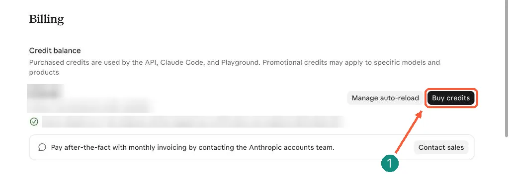
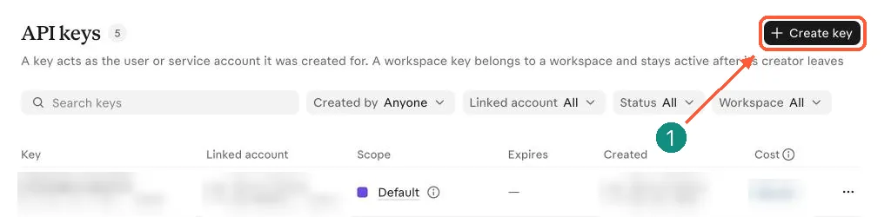
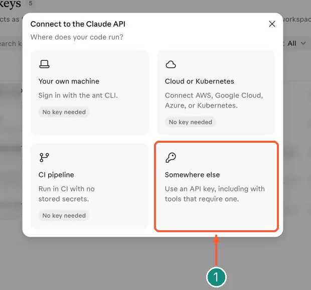
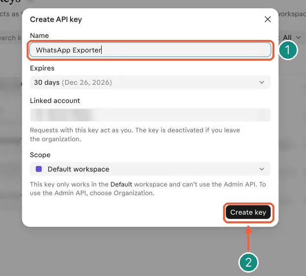

Get your Anthropic key in five minutes.
WhatsApp Exporter uses Claude, Anthropic's AI, to find names and other personal details in your chats. It needs a key, which is like a password that lets it use your Anthropic account.
-
Open the Claude Console and sign in
Keep the WhatsApp Exporter window open. Click the button below. It opens in a new tab.
Open platform.claude.com ↗If you don't have an account yet, click Continue with Google or type your email and follow the steps. It's free to sign up.
-
Add some credit
The key only works once your account has credit. Open the Billing page, then click Buy credits.
Open Billing ↗
Billing page. Your balance is shown where it's blurred here. Pick the smallest amount offered. It's plenty for most exports, and you can see what you've used on the same page.
If the page says Auto-reload is on and you only want to pay once, click Manage auto-reload and turn it off. Then you're never charged more than you added. -
Open API keys and click Create key
Open API keys ↗Click + Create key at the top right.

API keys page. If you have no keys yet, the list is empty. -
Choose “Somewhere else”
A box asks Where does your code run? Click the last card, Somewhere else. It's the one that says “Use an API key”.

The other cards don't give you a key, so skip them. -
Name it and click Create key
Type WhatsApp Exporter as the name, so you'll know what it's for later. Leave the other settings as they are, then click Create key.

The Create API key box The key stops working after 30 days, which is plenty for an export. If you'll use it again later, choose a longer time under Expires. -
Copy the key
Your new key appears, starting with sk-ant-. Click Copy.
platform.claude.com/settings/keysYour new API key
You won't be able to see it again.sk-ant-••••••••••••••••••••••••••••CopyThe key is shown once. Copy it now. The key is shown only once. If you close the box before copying it, just create another one. -
Paste it into WhatsApp Exporter
Go back to the WhatsApp Exporter window. Paste with ⌘ VCtrl V, then press Enter.
Paste your Anthropic API key, or press Enter to skip: ✔ API key works
When you see “API key works”, you're done. Nothing appears while you paste. That's normal: the key stays hidden on screen. Paste once and press Enter.
If something goes wrong
It says “That key didn't work”
Copy the key again with the Copy button rather than selecting it by hand, so no part is missed. Then paste it once and press Enter. If it still fails, create a new key and try that one.
My key worked before but doesn't now
Keys stop working when they expire, which is after 30 days unless you chose longer. Create a new one the same way. Also check that you still have credit.
It says “Couldn't reach Claude just now”
Check your internet connection. Also check that your account has credit on the Billing page. The exporter tries again during the export.
I closed the box before copying the key
Click Create key again and make a new one. You can delete the old one from the API keys list with the ⋯ menu next to it.
Is my key safe?
Treat it like a password and don't share it. WhatsApp Exporter uses it only while it runs and doesn't save it. You can delete the key on the API keys page at any time, and it stops working straight away.
Do I need this?
Only if you choose to redact. Without a key, press Enter to skip and the exporter uses checks on your computer only. These miss more personal details.